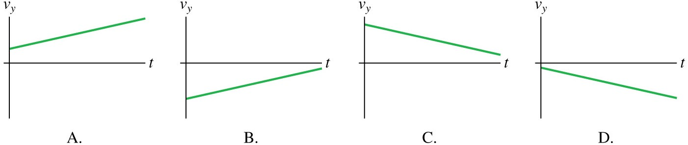

Acceleration a describes how much an object's velocity v changes in a given amount of time t.
Acceleration is a vector and requires a magnitude and a direction.

In this module you will:
We have learnt so far that a change in position over a given time is an object's velocity (Module 1.2). We need to learn one more concept to complete the description of motion; one that will describe an object whose velocity is changing.
The rate of change of the velocity is called the acceleration. In everyday language, acceleration usually means 'an increase in speed'. However, in physics, we can change the velocity of an object by changing its speed (increasing OR decreasing it), by changing its direction, or by changing its speed and its direction.
|
Acceleration a describes how much an object's velocity v changes in a given amount of time t. Acceleration is a vector and requires a magnitude and a direction. |
|
Worked example
|
The cheetah is the world's fastest land animal, with a maximum speed around 110 km/h. However, it is the cheetah's acceleration that makes it such an accomplished predator. It can accelerate from 0 km/h to 110 km/h in 4.0 s. What is the cheetah's average acceleration? |
We need to first convert the velocity into units of metres per second:
That means that, on average, the cheetah increases its speed by 7.7 m/s every second. Note that the direction can be represented by a signed number for one-dimensional movement. The positive number here means the cheetah's velocity is increasing. |
In Module 1.2, we saw how we can find the velocity-versus-time graph from the position-versus-time graph. We can now find the acceleration-versus-time graph from the velocity-versus-time graph.
 |
Finding an acceleration from a velocity graph. Both velocity and acceleration measure rates of change - velocity is the rate of change of position and acceleration is the rate of change of velocity. Therefore, the graphical relationship of acceleration to velocity is the same as the graphical relationship of velocity to position. Acceleration is the slope on the velocity-versus-time graph. |
The magnitude of the acceleration is a measure of how quickly the velocity is changing. But what does the sign of the acceleration (negative or positive) mean? It's not accurate to assume that a positive acceleration means an object is speeding up and a negative acceleration means it is slowing down. Because an object can move right or left (or, equivalently, up or down) while either speeding up or slowing down, there are four situations to consider.
 |
Determining the sign of the acceleration. Acceleration is a vector quantity. Remember, by convention for horizontal motion, movement to the right corresponds to increasing x and a positive velocity v. Therefore, an object that speeds up as it moves to the right has a positive acceleration, but an object that speeds up as it moves left (negative v) has a negative acceleration. |
Check your understanding of the sign of acceleration
|
An elevator is moving downward. It is slowing down as it approaches the ground floor. Adapt the information above to determine which of the following velocity-versus-time graphs best represents the motion of the elevator.  |
PRESCRIBED READING: Giambattista Physics (5th ed.). New York: McGraw-Hill, Section 2.3 - Acceleration: Rate of Change of Velocity; Section 2.4 - Visualising Motion Along a Line with Constant Acceleration.
ADD TO YOUR GLOSSARY OF TERMS: Try to define and summarise terms and concepts as they are introduced. Add to it with each module you do. Include: acceleration, sign of acceleration.
ADD TO YOUR SUMMARY OF KEY EQUATIONS: Try to summarise key equations and make sure you know how to use the equations in numerical calculations. Add to the list with each module you do. This summary will be useful in the online quizzes and in the examination.
NOW TRY THESE (attempt questions before looking at the answers):
1.3 Acceleration- Rate of Change of Velocity practice questions
1.3 Acceleration- Rate of Change of Velocity practice questions - ANSWERS
DISCUSSION: Use the TOPIC 1 forum for any questions or comments about this module.